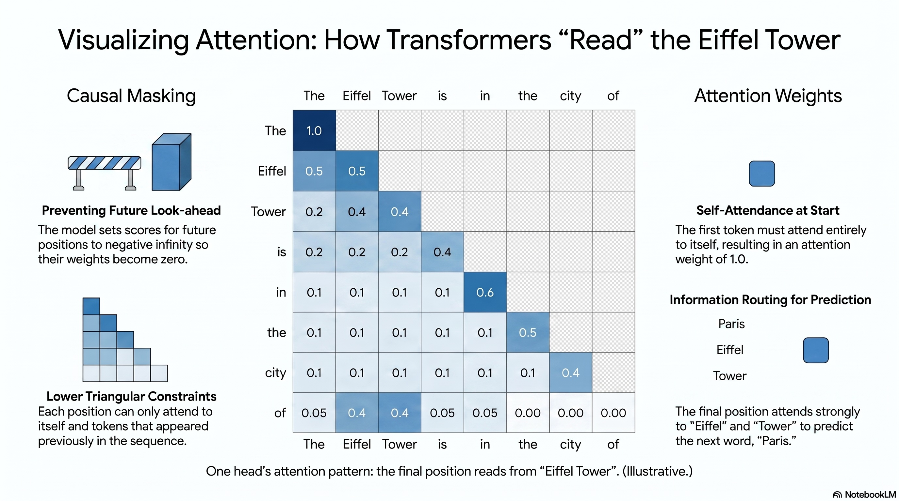

What we'll cover
Every model in this course is a transformer. This sub-session builds one properly, as a sequence of linear-algebraic operations you could, in principle, trace by hand rather than a black box. We go slowly through attention (with explicit matrix shapes and a worked example), then assemble the full block, and finish with the residual-stream picture that mechanistic interpretability (Weeks 7–8) literally reads off.
Notation we'll keep throughout: a sequence of \(T\) tokens; a model (residual-stream) dimension \(d_{\text{model}}\); \(n_h\) attention heads each of dimension \(d_{\text{head}} = d_{\text{model}}/n_h\) (why the dimension is divided this way is explained under Multi-head attention, below); a vocabulary of size \(V\).
Mandatory readings
• Watch: David Quarel, transformer architecture (ARENA) (embedded below): covers this sub-session's material end to end in half an hour; the diagrams and worked example on this page are built to be read alongside it.
• Vaswani, A., et al. (2017), "Attention Is All You Need" (NeurIPS 2017; arXiv:1706.03762): the original transformer; read §3 (Model Architecture), especially §3.2 on scaled dot-product and multi-head attention.
Optional readings
• Jay Alammar, "The Illustrated Transformer": clearer than the paper; the best diagram-led walk-through of the steps below.
• 3Blue1Brown, "But what is a GPT?" / "Attention in transformers": excellent geometric intuition.
• Elhage et al. (2021), "A Mathematical Framework for Transformer Circuits" (Anthropic, transformer-circuits.pub): the residual-stream view in full; we return to it in Week 7.
Core material
David Quarel's ARENA talk covers this sub-session's material end to end in half an hour; the diagrams and worked example on this page are built to be read alongside it. For the hands-on version, the ARENA "Transformer from Scratch" notebook builds the whole architecture in code; it is the long route, and the one the lab (2.5) borrows from.
From text to vectors
Tokens, embeddings, positions
- Tokenisation. Text is split into tokens: sub-word pieces from a fixed vocabulary of size \(V\) (30k–100k in the GPT-2/GPT-3 generation; newer vocabularies are larger, e.g. Llama 3's 128k and GPT-4o's ~200k). "tokenisation" might become
token | isation; a rare word becomes several pieces. Each token is an integer id. - Embedding. A learned matrix \(W_E \in \mathbb{R}^{V \times d_{\text{model}}}\) maps each id to a vector in \(\mathbb{R}^{d_{\text{model}}}\) (one row of \(W_E\)). A length-\(T\) sequence becomes an activation matrix \(X \in \mathbb{R}^{T \times d_{\text{model}}}\), one row per position.
- Position. Self-attention is permutation-equivariant: shuffle the input rows and the output rows shuffle the same way; it has no built-in sense of order (because, as the next section shows, attention is a content-weighted sum with no term that depends on a position's index). So positional information is injected (added positional embeddings, or rotary/relative schemes) before the first block.
From here on, each transformer block maps a \(T \times d_{\text{model}}\) matrix to another of the same shape (internally, as we'll see, it routes through narrower matrices and back). That preserved width is the residual stream.
One attention head, step by step
Attention is the one new idea. It lets each position selectively read information from other positions. Here is a single head, in five steps.
Step 1 — Project to queries, keys, values
From the input \(X \in \mathbb{R}^{T \times d_{\text{model}}}\), three learned matrices produce three new matrices:
with \(W_Q, W_K, W_V \in \mathbb{R}^{d_{\text{model}} \times d_{\text{head}}}\), so \(Q, K, V \in \mathbb{R}^{T \times d_{\text{head}}}\). Think of each position as emitting a query ("what am I looking for?"), advertising a key ("what do I offer?"), and holding a value ("what I'll pass on if attended to").
Step 2 — Score every pair
The relevance of position \(j\) to position \(i\) is the dot product of query \(i\) with key \(j\). All pairs at once:
Row \(i\) of \(S\) says how much position \(i\) wants to read from each position.
Step 3 — Scale by \(\sqrt{d_{\text{head}}}\)
Divide by \(\sqrt{d_{\text{head}}}\) before the softmax:
Why: if the components of \(q\) and \(k\) have variance ~1, their dot product over \(d_{\text{head}}\) terms has variance ~\(d_{\text{head}}\). Without rescaling, large \(d_{\text{head}}\) pushes the softmax into saturation (one weight ≈ 1, the rest ≈ 0), where gradients vanish. Dividing by \(\sqrt{d_{\text{head}}}\) keeps the scores at a sensible scale.
Step 4 — Causal mask + softmax → attention weights
For a language model predicting the next token, position \(i\) must not see the future. We set \(\tilde{S}_{ij} = -\infty\) for \(j > i\) (so those weights will become 0), then apply a row-wise softmax, the function that turns a row of real scores \(z\) into a probability distribution, \(\operatorname{softmax}(z)_j = e^{z_j} / \sum_k e^{z_k}\) (every entry positive, the whole row summing to 1):
Each row of \(A\) is now a probability distribution over the positions at or before \(i\) (the masked future positions, sent to \(-\infty\), get weight 0), the attention pattern. These weights are explicit numbers you can plot, which is why attention is a natural entry point for interpretability.
Step 5 — Read out a weighted sum of values
Position \(i\)'s output is the average of the value vectors, weighted by how much it attended to each. Putting the steps together gives the familiar formula:
![Flow diagram of one attention head. The input X (shape T by d_model) is projected by three learned matrices W_Q, W_K and W_V into Q, K and V, each of shape T by d_head. Q and K feed a matmul that produces the score matrix S = Q K-transpose (shape T by T); S is divided by the square root of d_head, given a causal mask, and passed through a row-wise softmax to produce the attention weights A (shape T by T). A and V feed a second matmul, giving the head output of shape T by d_head. The caption formula reads Attention(Q,K,V) equals softmax of (Q K-transpose divided by root d_head) times V.](../../assets/img/session-2-2a-attention-head-flow.jpg)
A worked intuition: "…the Eiffel Tower is in the city of ___"
To predict the next token, the final position emits a query that (in some head) is best matched by the key at "Eiffel Tower". That head's attention row puts most weight on the "Eiffel Tower" position and copies its value into the final position's output, moving the information "this sentence is about the Eiffel Tower" forward to where it's needed. Attention only moves information like this; it is the later layers and MLPs that turn "this is about the Eiffel Tower" into the prediction "Paris". Induction heads, which you'll reverse-engineer in Week 7, are a famous, crisp version of this copy-by-matching behaviour.

Multi-head attention
Several heads in parallel, then recombine
A layer runs \(n_h\) heads independently and in parallel, each with its own \(W_Q, W_K, W_V\), so each can learn a different routing pattern (one head tracks subject–verb agreement, another copies rare tokens, and so on). Their outputs are concatenated and projected back to the model width by an output matrix \(W_O \in \mathbb{R}^{d_{\text{model}} \times d_{\text{model}}}\):
Because \(d_{\text{head}} = d_{\text{model}}/n_h\), the \(n_h\) head outputs (each \(T \times d_{\text{head}}\)) concatenate to exactly \(T \times d_{\text{model}}\), and the total compute is similar to one big head, but the model gets several independent "read channels". GPT-2 small, the model you'll open in the lab, has \(d_{\text{model}} = 768\) and \(n_h = 12\) heads of dimension 64, across 12 layers.
The MLP (feed-forward) sub-layer
Per-position computation and storage
After attention moves information between positions, a position-wise MLP does computation within each position, the same two-layer network applied to every row independently:
It up-projects to a wider hidden dimension (commonly \(4 d_{\text{model}}\)), applies a nonlinearity \(\sigma\) (GELU in GPT-2), then down-projects back. The MLP holds much of a transformer's stored "knowledge" and accounts for roughly two-thirds of a block's (non-embedding) parameters, and is, so far, harder to interpret than attention.
LayerNorm and the full block
One transformer block
A block wraps attention and MLP with LayerNorm (which rescales each position's vector to zero mean and unit variance, stabilising training) and adds each sub-layer's output back to its input. Modern transformers use the pre-norm arrangement:
Stack \(L\) such blocks (12 in GPT-2 small, ~100 in frontier models). Each block reads the current state, computes a correction, and adds it back.
The residual stream
The residual-stream picture
Notice the "\(x \leftarrow x + \ldots\)". A block never replaces the activations; it adds to them. So each position carries a running vector (the residual stream) that begins as the token+position embedding and accumulates contributions as it passes up through the layers. Every attention head and every MLP reads from the stream (via LayerNorm) and writes a vector back into it by addition.
So the residual stream is a shared communication channel: earlier components write information that later components read. "Finding a circuit" (Week 7) means identifying which components write a particular piece of information and which later ones read it: a question you can answer, because the writes are additive and the reads are linear. This additive view is the literal computation.
From the residual stream to a prediction
Unembed, logits, loss
After the final block, a last LayerNorm is applied and the residual vector at each position is mapped to vocabulary scores by the unembedding matrix \(W_U \in \mathbb{R}^{d_{\text{model}} \times V}\):
Row \(i\) is the model's predicted distribution for the token after position \(i\). Training minimises the cross-entropy of \(p\) against the true next token at every position, the loss from Session 2.1. That single objective, next-token prediction, is the only thing the network is ever directly optimised for.
Trace one prediction, end to end
Tokens → embeddings + positions give \(X\) (\(T \times d_{\text{model}}\)) → each block: attention routes information between positions, MLP computes within them, both added back into the residual stream → final LayerNorm → multiply by \(W_U\) → logits → softmax → next-token distribution. Everything in between is matrix multiplies, one softmax per head, and additions. Nothing else.
Three consequences for safety
Tokenisation has consequences
African and other low-resource languages are often split into far more tokens than English (because the vocabulary was fit mostly to English-heavy data). That raises cost, shortens effective context, and degrades quality: one concrete root of the capability and safety gaps this course keeps returning to. You'll measure it yourself in the 2.5 lab.
Attention is inspectable
Attention weights and head outputs are explicit tensors. We can watch the model route information: the entry point for interpretability (Weeks 7–8) and for catching unexpected or deceptive behaviour.
The objective is just next-token
Reasoning, code, refusals, "personality": all are learned only as means to predicting the next token on the training data. Keep asking what behaviour that objective does and does not incentivise; that question is the seed of the alignment problem in Session 3.
Next
We can now build these models and read their internals. Sub-session 2.3 asks the question that makes safety urgent: as we make transformers bigger, how predictably do they get better?